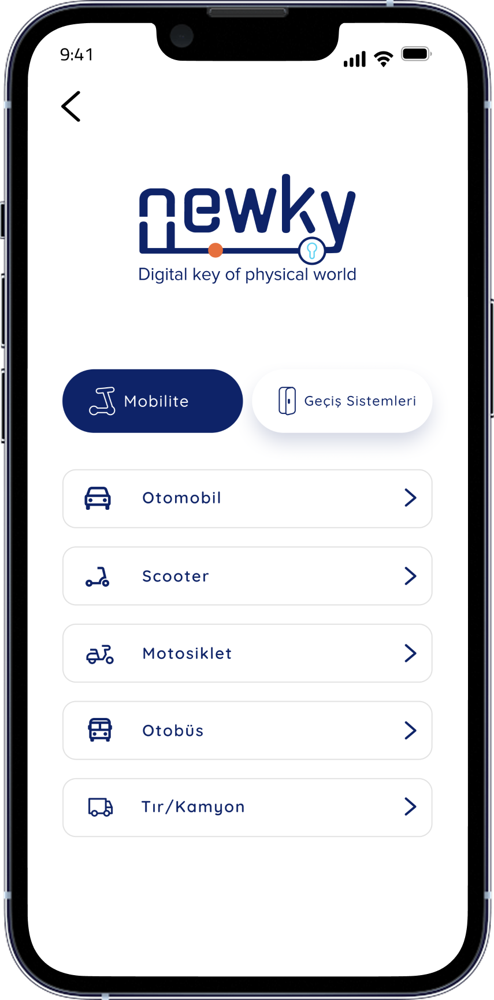
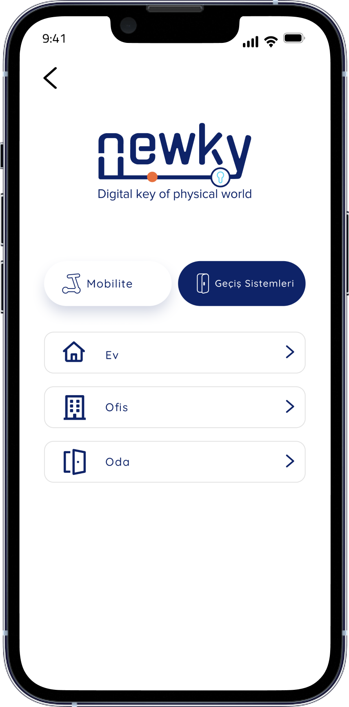
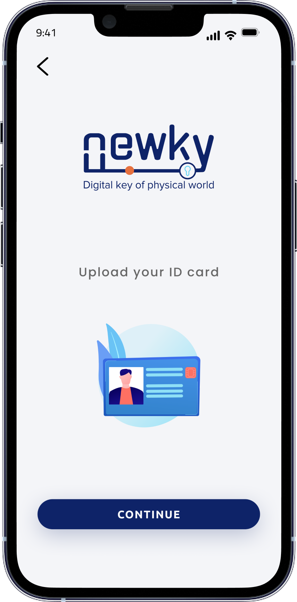
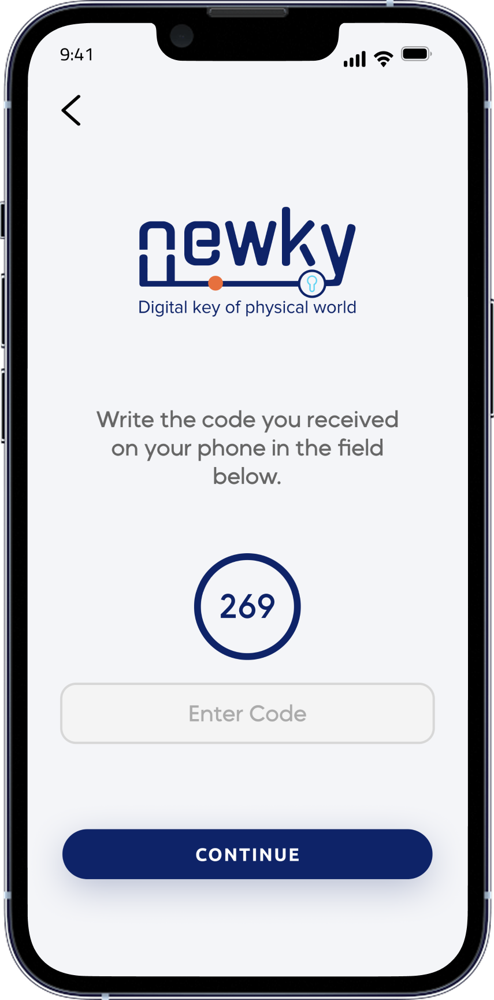
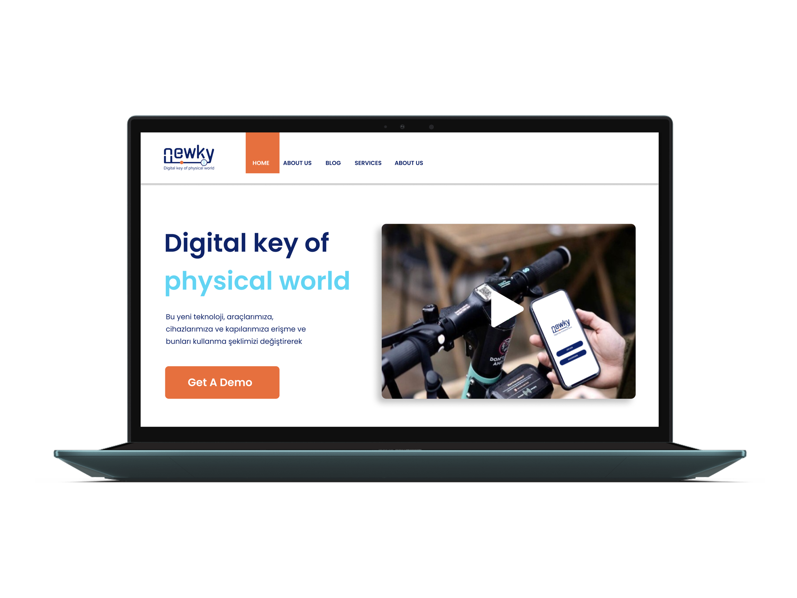
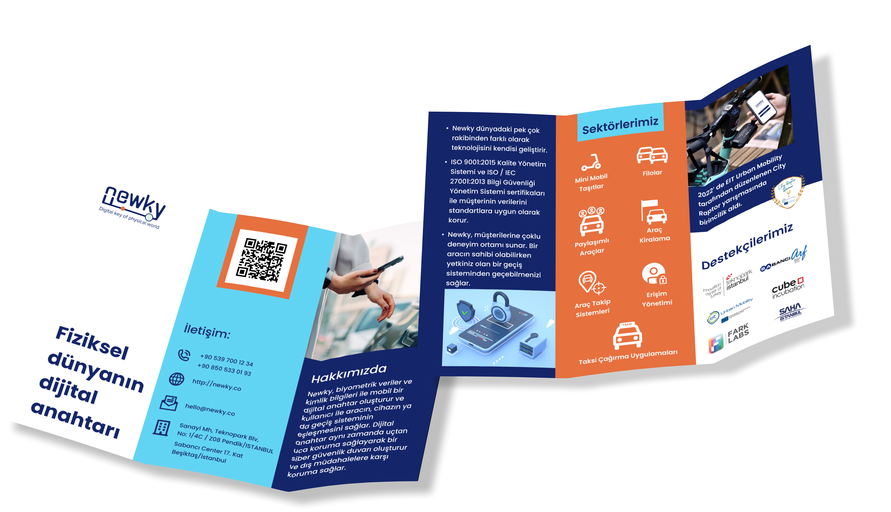

A zero-to-one product journey at a deep-tech AI startup — designing Newky's mobile app, web presence, and brand system from scratch for mobility and transit access.
Texinsight was a deep-tech AI startup building Newky — a security access layer designed for shared physical environments. When I joined as the sole product designer, the concept existed only in engineering: no interface, no brand, no user journey. My task was to take a technical idea and turn it into something a real person could pick up and immediately trust.
The product needed to work for two very different audiences: end-users who need fast, frictionless access in their daily lives (vehicle, building, transit) and administrators who need clear control and oversight. These two modes had to coexist without friction.
Before any screen work, I ran discovery sessions to understand how people currently navigate shared access environments — vehicles, transit systems, building entry. The goal was to map not just behaviour, but emotional relationships with security and access: what builds confidence, what creates anxiety, and what breaks trust.
Two clear archetypes emerged. The end-user values speed and clarity — they want to know it worked instantly, without reading anything. The admin needs persistent oversight and clear hierarchy — what needs action vs. what's just information. These two modes shaped every structural decision.
I don't care how it works technically. I just need to know it worked — and to know it's mine, not someone else's access.
End-user interview — mobility access contextThe Newky app is structured around two primary modules: Mobilite — personal mobility access (vehicles, scooters, motorcycles, public transport) and Geçiş Sistemleri — space and building access (home, office, room). A clear tab navigation gives each user type an immediate mental anchor the moment the app opens.
The visual language uses Newky's navy blue (#0d2952) and orange (#e8601c). Navy communicates authority and trust; orange is used exclusively for active and success states — creating an unambiguous confirmation signal that requires no words.


Working as the sole designer in an engineering-led startup meant research, systems design, and visual execution all ran simultaneously. The process was deliberately iterative — I established the architecture first, built the component system second, and refined screen-by-screen as the product evolved.


Beyond the mobile app, Newky needed a web presence that communicated the product's value to people who would never open the app themselves: investors, enterprise clients, and public-sector partners. The website and brochure extended the same navy + orange design language into a confident, commercial story.


Over twelve months, Newky went from a technical concept to a production-ready iOS app with a complete design system, validated onboarding flow, marketing website, and brand materials. The design work created the foundation that enabled Texinsight to enter commercial conversations and pursue hardware productisation.
This was the most formative project of my career to that point. With no brief, no team, and no existing system to extend, every decision — structural, visual, strategic — had to be reasoned from first principles. The most important lesson: trust is a design material. In a security product, every color choice, every state transition, and every empty state is a trust signal.
Starting with emotional research — not feature lists — grounded every screen in genuine user anxiety. The Mobilite / Geçiş Sistemleri duality emerged from user mental models, not engineering taxonomy, and made the product immediately navigable without instruction.
I would push for dedicated usability sessions earlier. The onboarding flow went through four major revisions that earlier testing could have reduced to two. In a startup context — where every iteration takes engineering time — that matters significantly.
Designing for an IoT pairing flow for the first time required a different kind of rigor. There's no "undo" when a gate doesn't open. The design system had to account for hardware error states with exceptional clarity — normal mobile UX conventions weren't sufficient.
The component library and design principles I built at Texinsight were intended to outlast my tenure — a system the product could grow from independently. That's what 0→1 design should produce: not just polished screens, but a foundation.